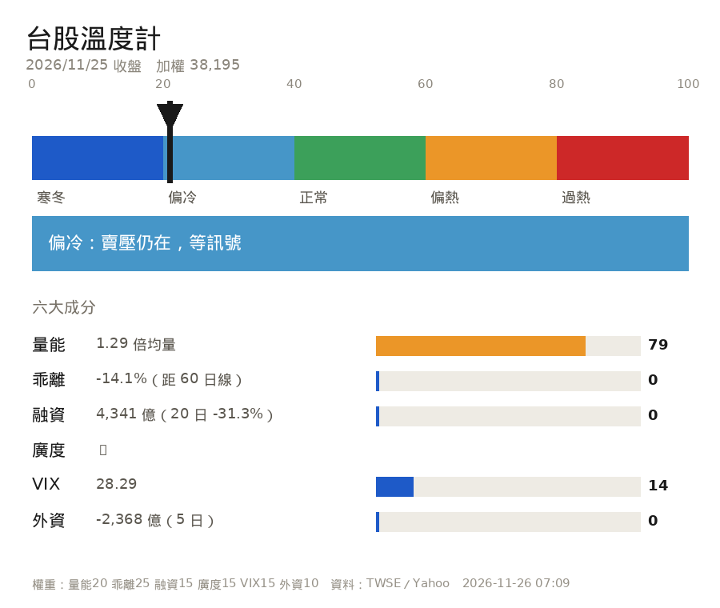
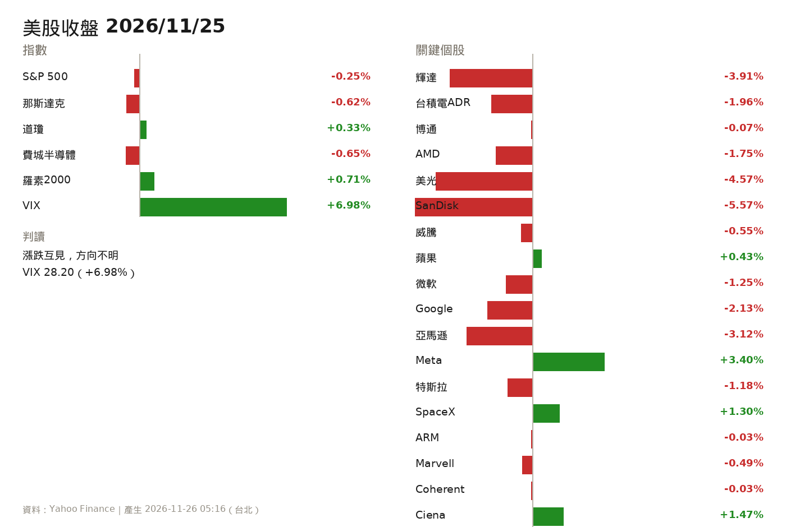
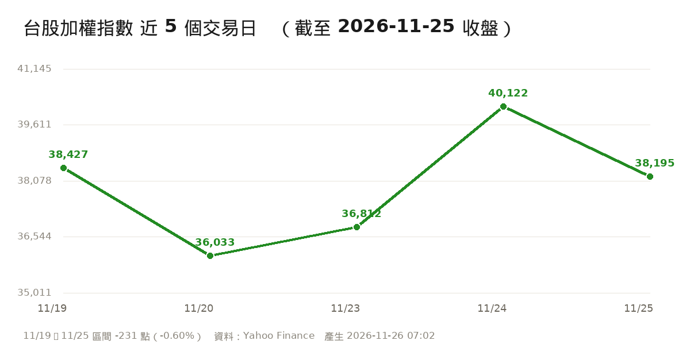
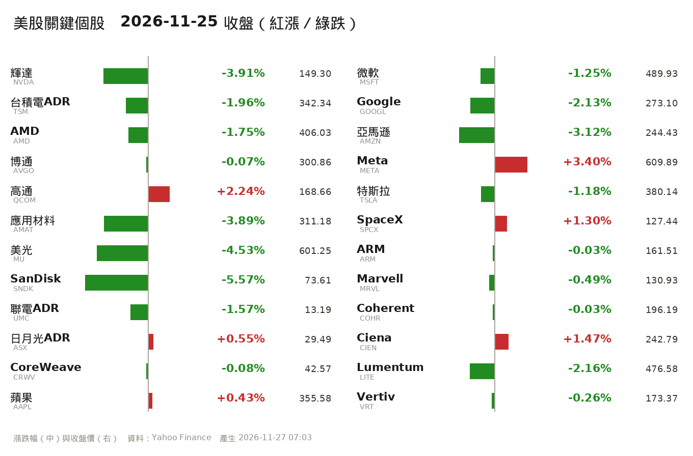
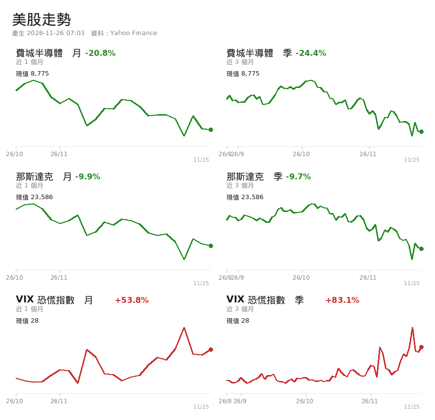
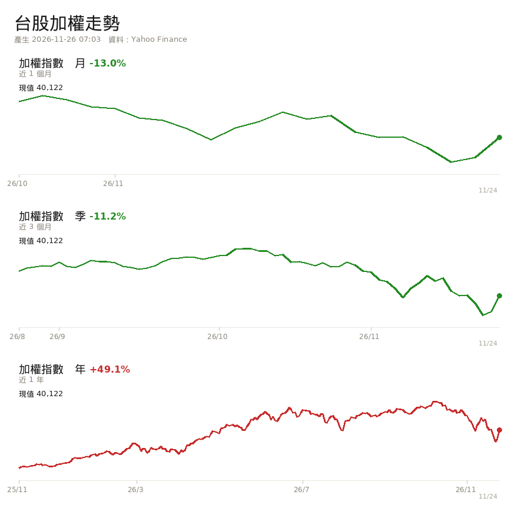
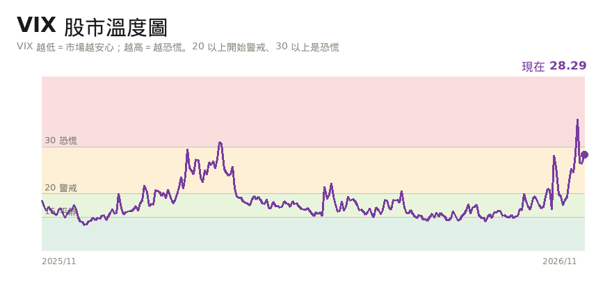

2026-11-26 投資日報2026-11-26 07:13
產生時間：2026-11-26 07:00（台北）｜資料截止：台股 11/25 收盤、美股 11/25 收盤（台北 11/26 05:00）
🚨 警報狀態（L3）：你的 2454 條件已經全部觸發，大盤跌破年線
已發生（有價格、有公告）
- 2454 聯發科 11/25 跌停收 3,645（-405 元、-10%）。你的成本 3,895.25，現價低於成本 6.42%。你先前寫好的條件——「跌破 3,895 減半、跌破 3,830 全出」——兩個價位都在 11/25 被跌破，觸發的是比較嚴格的那一條（3,830 全出）。
- 加權指數 -1,926.92（-4.80%）收 38,195.43，跌破年線約 39,551，盤中最低 36,681.90（-3,440 點，史上第 2 大盤中跌點）；成交 1 兆 1,881.99 億（前日 2.75 倍）。11/24 那根 +3,310 點，一天吐掉近六成。
- 外資賣超 1,236.55 億（連 8 賣）、投信買超 535.32 億、自營 -128.33 億，合計 -829.56 億。上市上漲 39 家／下跌 1,053 家，金融股 -6.31%（華南金跌停、兆豐金 -9.64%）、塑化 -7.21%。
- 美股 11/25 是先崩後收斂：道瓊盤中曾瀉 1,104 點，終場 +0.33% 收 50,182.95；S&P -0.25%、那指 -0.62%、費半盤中最深 -7.96%、終場 -0.65%；VIX 28.29（+7.32%）。輝達盤中 -9%、收 149.30（-3.91%）。
- 新增一條官方利空：USTR 11/25 公布 301「工業產能過剩」調查結果，台灣協議稅率最高 15% 不疊加、中國最高 20%、共 14 國，最快 2027 年 1 月聽證後上路，備案最高 25%。這是提案，還沒生效。
這不是新事件，是同一段行情的中途（2026-11 那次你沒逃過，EP.177 就提示過）。風險未解除前，每天都會出現在最前面。
今天最容易犯的錯：把「跌深」當成「便宜」。今天美股感恩節休市，台股沒有新指引，全靠內資與程式單——這種盤最容易出現「開低走高又破底」。
警報系統現況（誠實講）：危機警報 盤中每5分、危機警報 影片檢查22:20 兩個都啟用中，最後執行 11/25 13:56／22:21 正常。粉專貼文抓取 06:20 今早失敗（缺 websocket 模組），我已在 07:07 補裝並手動補抓成功。
📌 本週紅綠清單摘要（來源：財經頻道/週報/2026-W47.md，11/22 產出）
- 🔴 本週看多 18 項（12 檔個股／族群）— 集中在 AI 伺服器、CCL／PCB、記憶體「跌深反彈」
- 🟢 本週危機 41 項，E1～E9 仍有 8 項未解除
- 週報當時的判語是「投降式下殺，不是單純回檔」。這一週（11/23～11/25）驗證了這句話：反彈一天就破底。
重點提醒｜Emmy（持續中）
來源：
財經頻道/Emmy追劇時間/Emmy重點提醒追蹤.md。未解除就會每天出現；判定解除當天標「過期」，隔天起不再列出。
- E1 輝達 NVDA／黃仁勳 真正風險不是技術洩密，是「走私晶片＋長期遊說晶片禁令」的國安問題。已持續 14 天。⬆️ 惡化：S&P Global 11/25 將輝達列入負面信用觀察名單、啟動 90 天評估（穆迪先前已下調展望）；NVDA 11/25 再跌 -3.91% 收 149.30（盤中一度 -9%），兩日累計 -9.5%。12/1 眾院閉門、12/2 法務長、12/3 參院公開作證。解除條件：12/1、12/3 國會程序結束且無新增出口管制或刑事程序。
- E2 台股／美股大盤 民主黨期中選舉大勝 → AI 資料中心與科技業監管收緊的恐慌，是 11/05-11/06 崩盤主因。已持續 18 天。➡️ 未變：11/25 的新利空是貿易線（301 關稅，另立 E11），不是科技監管線；BIS 132 頁新規仍生效、無新增也無轉鬆。解除條件：具體監管法案送進國會並過關，或政策明確轉向寬鬆。
- E3 台股／美股大盤 「熊市要來了嗎、該獲利了結嗎」——她事前提示了這一波下殺。已持續 25 天。⬆️ 惡化：11/25 加權 -1,926.92（-4.80%）收 38,195.43，跌破年線 39,551，盤中最低 36,681.90（-3,440 點）；外資 -1,236.55 億（連 8 賣）。11/24 的 +3,310 點一天吐掉近六成，解除條件（站回季線＋外資連續買超）反而更遠。解除條件：指數站回季線且外資轉為連續買超。
- E4 油價／布蘭特原油 中東戰火推升油價 → 通膨壓力 → 股市下跌。已持續 28 天。⬆️ 惡化：布蘭特 11/25 收 90.82（重回 90 上方）、WTI 84.15；OPEC+ 11/29 開會前無降溫證據，解除條件（回落 90 以下）失效。解除條件：布蘭特回落至 90 美元以下且中東衝突降溫。
- E5 記憶體族群／8299 群聯 大摩一次降 6 檔記憶體、目標價腰斬，群聯 2,588→1,357 降為「劣於大盤」。已持續 15 天。⬆️ 惡化：美光 11/25 再 -4.53%（601.25）、SanDisk -5.57%，連兩日下殺；台股 11/25 南亞科、華邦電、旺宏、創見全部跌停；集邦指 2027 年 NAND 供需反轉、合約價 2027Q1 轉跌。解除條件：NAND 現貨報價重新轉強且外資對群聯轉為買超，或大摩回補評等。
- E7 AI 硬體成本／毛利率見頂 輝達 Q4 毛利率指引 71~72%，低於本季 74.8%；採購承諾大幅增加，成本往上游擠。已持續 8 天。➡️ 未變：Q4 毛利率指引 71~72% 不變；11/25 的新增資訊是信用評級與關稅，不是毛利率；採購承諾仍未以 10-Q 原文核對。解除條件：輝達毛利率回升至 74% 以上且採購承諾增速放緩，或記憶體現貨報價連續 2 個月回落。
- E8 跨資產同步下跌／流動性緊縮 股、油、金同一天一起跌，代表「保證金追繳、到處變現」，不是資金輪動。已持續 5 天。⬆️ 惡化：11/25 股金再同跌——現貨金 3,547.29（-0.2%）、盤中跌破 3,500（去年 8 月以來首見），同日 S&P -0.25%、費半 -0.65%；VIX 28.29（+7.32%）已升破 25，避險需求與變現壓力同時在。解除條件：VIX 回落至 25 以下、黃金與股市不再同步下跌、美 10 年殖利率止穩。
- E9 AI 晶片出口許可調查擴散（輝達＋超微） 調查戰線從「走私」擴大到「許可審查」與「會計揭露」；超微遭 Hunterbrook 做空報告狙擊。已持續 4 天。➡️ 未變（跌幅收斂、程序未結）：AMD 11/25 收 406.03（-1.75%），跌勢明顯小於前一日 -8.86%；做空報告未被監管駁回、國會聽證未舉行。解除條件：國會聽證結束且無新一輪管制、超微與輝達不再創低，或做空報告被監管駁回。
- E10 政策／政治市：暴漲暴跌 這一波下跌與反彈都由「政治決定」驅動——川普 11/23 發文要求輝達回聘；台股靠國安基金＋限空令 3.0＋維持率降至 120% 拉抬。漲跌理由不在基本面，代表政策一轉彎就會反向。已持續 2 天。⬆️ 惡化（政策護盤失效的證據）：國安基金＋限空令 3.0 之下，11/25 仍 -1,926.92 點；投信買超 535.32 億是 ETF 申購的被動買盤（晨星），不是經理人看多；外資同日賣 1,236.55 億。政策只買到「不跌停」，買不回指數。解除條件：政策工具退場後指數仍站穩季線 3 日，且外資連續買超 3 日。
- E11 301 關稅／台灣稅率 USTR 11/25 公布「工業產能過剩」301 調查結果：台灣協議稅率最高 15% 不疊加、中國最高 20%、共 14 國；川普另稱兩年後對進口晶片課 200%。今天提出。🆕 新增（提案階段）：稅率是提案，最快 2027/1 聽證與意見徵詢後上路；備案最高 25%。對台廠實際成本尚未發生，但已足夠讓 11/25 金融股 -6.31%、台股破年線。解除條件：台美協議簽署且稅率定案不再加碼，或正式生效後 3 個月台廠接單與毛利未受影響。
⓿ 先回答三個問題：消息面 vs 已發生
① 301 關稅「台灣 15%」是利空出盡，還是還有第二段？
| 項目 | 狀態 | 說明 |
|---|---|---|
| USTR 11/25 公布 301 產能過剩調查結果，台灣協議稅率最高 15% 不疊加、中國 20%、共 14 國 | 🟥 已發生（提案公布） | 這是正式文件，不是傳聞 |
| 稅率 2027 年 1 月聽證與意見徵詢後才上路 | ⏳ 還沒發生 | 現在沒有任何一家台廠被加稅 |
| 「備案最高 25%」、川普受訪稱兩年後對進口晶片課 200% | 🔵 消息面／提案 | 備案是談判籌碼；200% 是受訪說法，沒有行政命令 |
| 11/25 金融股 -6.31%、台股破年線 | 🟥 已發生 | 市場先賣再說，賣的是「不確定性」不是「稅」 |
怎麼用：15% 比市場怕的 20～25% 低，短線是「比預期好」；但真正會壓毛利的是 2027 年上路後的轉嫁能力。現在要盯的不是稅率，是台美協議有沒有簽、備案 25% 有沒有被拿掉。
② 2454 跌停是「錯殺」還是「趨勢」？
| 項目 | 狀態 | 說明 |
|---|---|---|
| 2454 收 3,645 跌停，外資賣超 3,753 張（連 8 賣） | 🟥 已發生 | 跌停鎖死到收盤，委賣未消化 |
| 創意、南亞科、華邦電、聯電同步跌停；IC 設計＋記憶體是重災區 | 🟥 已發生 | 不是單一公司問題，是整個族群 |
| 11/24 才漲停 4,050 → 11/25 跌停 3,645，兩天相差 405 元 | 🟥 已發生 | 這種振幅＝籌碼戰，不是基本面變化 |
| 11 月營收（12/10 公告）會不會鬆動 | ⏳ 還沒發生 | 這是判斷「錯殺」還是「趨勢」的唯一硬證據 |
怎麼用：跌停當天不談「便不便宜」。你的條件是價格條件，不是價值條件——價格到了就執行，理由之後再檢討。
③ 核心 PCE 3.3%＋12 月升息 97%，下跌空間反映完了嗎？
| 項目 | 狀態 | 說明 |
|---|---|---|
| 10 月核心 PCE 月增 0.3%、年增 3.3%（預期 3.2%，近三年新高）；整體 PCE 年增 3.8% | 🟥 已發生（BEA 公布） | 通膨沒有降溫，是「符合月增、超出年增」 |
| Q3 GDP 修正值 4.3%（初值 3.4%），三年最快 | 🟥 已發生 | 經濟太好＝Fed 沒有降息理由 |
| FedWatch：12 月升息 97%、1 月再升 66% | 🟥 已發生（市場定價） | 12/9 FOMC |
| 「升息已完全反映，所以不会再跌」 | 🔵 觀點 | 3.3% 是三年新高，若 1 月也升，折現率會再往上 |
怎麼用：升息已被定價 97%，這不是新的下跌理由；新的理由會是「1 月也升」與「AI 舉債成本」。所以看 12/9 的會後聲明，不看這次升不升。
① 一句話結論
今天是「沒有美股指引的內資盤」：美股今晚感恩節休市，台股要自己走。你的 2454 條件已觸發（跌破 3,830），今天開盤第一件事是處理它，不是看盤。不接刀、不攤平、不追反彈。
- 市場溫度 21／100（偏冷）（
market_temp.py實算）。偏冷的意思是「跌深」，不等於「會彈」。 - 今天的紀律第一行：先執行 2454 的條件，再看別檔。 其餘 10 檔今天不動。
- 台指期夜盤：11/25 23:59 報 36,347（-1,776 點、-4.66%），盤中最低 35,933（-2,190 點）；05:00 的官方收盤數字尚未公布，但同一時間美股尾盤大幅收斂（道瓊翻紅），夜盤尾盤應該也收斂——這是推論，不是數字。
-
🎒 JNA-202 PRO 快取單肩包：目前最低 2,800（BigGo／飛比 全新），目標 1,500，還差 1,300，未達標。
② 國際與美股（11/25 收盤，台北 11/26 05:00）
市場溫度（警示燈）

21／100（偏冷）：量能 79 分（1.29 倍均量，恐慌換手）、乖離 0 分（-14.1%）、融資 0 分（4,341 億、20 日 -31.3%）、VIX 14 分（28.29）、外資 0 分（5 日 -2,368 億）。
| 指數 | 收盤 | 漲跌 |
|---|---|---|
| S&P 500 | 7,182.78 | -0.25% |
| 那斯達克 | 23,585.80 | -0.62% |
| 道瓊 | 50,182.95 | +0.33% |
| 費城半導體 | 8,774.86 | -0.65%（盤中最深 -7.96%） |
| 羅素 2000 | 2,704.06 | +0.71% |
| VIX | 28.29 | +7.32% |

關鍵個股（24 檔，全部以 Yahoo Finance 收盤價抓取，非記憶）
| 個股 | 收盤 | 漲跌 | 一句判讀 |
|---|---|---|---|
| 輝達 NVDA | 149.30 | -3.91% | 盤中一度 -9% 才拉回；S&P Global 把它列入負面信用觀察（90 天），利空從「政治」擴到「信用」 |
| 台積電 ADR TSM | 342.34 | -1.96% | 跌幅小於費半，溢價收斂到 3% 附近，對 2330 是中性偏空 |
| AMD | 406.03 | -1.75% | 從 -8.86% 收斂到 -1.75%，做空報告的衝擊在減弱 |
| 博通 AVGO | 300.86 | -0.07% | 幾乎平盤，客製化晶片（ASIC）這條線沒跟著殺 |
| 高通 QCOM | 168.66 | +2.24% | 手機晶片不在風暴中心，資金往「非 AI 硬體」躲 |
| 應用材料 AMAT | 311.18 | -3.89% | 設備股連兩日重挫，資本支出預期被往下修 |
| 美光 MU | 601.25 | -4.53% | 連兩日下跌（前一日 -11%），記憶體還在洩氣 |
| SanDisk SNDK | 73.61 | -5.57% | NAND 最敏感，兩日合計 -16% |
| 聯電 ADR UMC | 13.19 | -1.57% | 成熟製程止穩，跌勢明顯收斂 |
| 日月光 ADR ASX | 29.49 | +0.55% | 逆勢收紅，封測不在這次的賣壓核心 |
| CoreWeave CRWV | 42.57 | -0.08% | 止穩，但那是「跌到沒人想賣」的止穩，不是轉強 |
| 蘋果 AAPL | 355.58 | +0.43% | 防禦屬性，連兩日收紅 |
| 微軟 MSFT | 489.93 | -1.25% | 軟體相對抗跌（財女珍妮的「轉軟體」說法在這裡得到驗證） |
| Google GOOGL | 273.10 | -2.13% | 廣告＋雲端同時被折現率壓 |
| 亞馬遜 AMZN | 244.43 | -3.12% | 資本支出最大的那家，跌最多 |
| Meta META | 609.89 | +3.40% | 全場最強，市場把「不蓋那麼多機房」當好事 |
| 特斯拉 TSLA | 380.14 | -1.18% | 觀望合併題材，沒有方向 |
| SpaceX SPCX | 127.44 | +1.30% | 前一日 -5.65% 後止穩；新股波動大，一天 5% 是常態 |
| ARM | 161.51 | -0.03% | 與 NVDA 脫鉤（NVDA -3.91%），ASIC 陣營沒有跟著崩 |
| Marvell MRVL | 130.93 | -0.49% | 同上，客製化晶片是這波最抗跌的一條線 |
| Coherent COHR | 196.19 | -0.03% | 光通訊止穩，前一日 -9% 沒續跌 |
| Ciena CIEN | 242.79 | +1.47% | 資料中心內部連線需求仍在，逆勢收紅 |
| Lumentum LITE | 476.58 | -2.16% | 跌幅收斂，但仍是光通訊裡最弱 |
| Vertiv VRT | 173.37 | -0.26% | 散熱電源止穩＝AI 機房還沒停止發包 |
上漲的部分（別只看跌）：Meta +3.40%、高通 +2.24%、Ciena +1.47%、SpaceX +1.30%、日月光 ADR +0.55%、蘋果 +0.43%，道瓊與羅素 2000 都是收紅。這不是全面崩盤，是資金從 AI 硬體搬到價值股與軟體。
上漲主因／下跌主因
- 跌：① 301 關稅提案公布（台灣 15%、備案 25%）；② 核心 PCE 3.3% 三年新高、12 月升息 97%；③ 輝達被 S&P Global 列負面信用觀察；④ AI 舉債投資的回收期被重新計算（《華爾街日報》談信貸利差擴大）。
- 漲：① 戴爾 Q3 優於預期、AI 新增訂單 602 億美元、在手訂單 1,323 億；② 11 月消費者信心 103.3（+11.4，近兩年高）；③ 道瓊成分股（金融、醫療、零售）接棒。
跨市場
| 項目 | 數值 | 變動 |
|---|---|---|
| 美 10 年期殖利率 | 4.85% | 回落（前 4.90%） |
| 美 5 年期殖利率 | 4.66% | 回落（前 4.71%） |
| 美元指數 DXY | 103.69 | -0.11% |
| 布蘭特原油 | 90.82 | 重回 90 上方 |
| WTI | 84.15 | 近月換月，日變動失真 |
| 黃金（現貨） | 3,547.29 | -0.2%，盤中跌破 3,500（去年 8 月以來首見） |
| 美元／台幣 | 33.22 | 台幣續貶（11/25 收 33.126、貶 1.87 角） |
| VIX | 28.29 | +7.32% |
黃金與股市同一天下跌，是 E8「跨資產同步下跌」的第 3 次出現——避險資產也在被賣，代表有人需要現金。
③ 台股覆盤（11/25）

| 項目 | 數值 |
|---|---|
| 加權指數 | 38,195.43（-1,926.92、-4.80%） |
| 開盤／最高／最低 | 39,983.91／39,983.91／36,681.90 |
| 成交金額 | 1 兆 1,881.99 億（前日 2.75 倍） |
| 櫃買指數 | 275.97（-5.89%） |
| 漲跌家數（上市） | 上漲 39／下跌 1,053／持平 19 |
| 跌停 | 上市 54 檔觸及跌停（工商時報）；南亞科、華邦電、聯電、創意、2454 均跌停 |
| 三大法人 | 外資 -1,236.55 億（連 8 賣）、投信 +535.32 億、自營 -128.33 億，合計 -829.56 億 |
| 融資餘額 | 4,341 億（-194 億） |
| 台幣 | 33.126（貶 1.87 角） |
盤勢節奏：開低 138 點 → 開盤即最高 → 賣壓擴大到 -3,440 點（36,681.90）→ 午後低接買盤進場、收復 38,000 → 終場 -1,926.92。留下 1,513 點下影線，代表低檔有人接，但接的人是投信（ETF 被動）與當沖，不是外資。
類股：金融 -6.31%（華南金跌停、富邦金 -7.67%、兆豐金 -9.64%）、塑化 -7.21%、機電 -4.73%。唯一逆勢的是資安——資拓宏宇（6614）、資通（2471）漲停，川湖（2059）+4.92%。資安漲的理由是「關稅與監管風險上升」，這是防禦性資金，不是主流。
法人數字口徑提醒：媒體多用「投信 +535.32 億、合計 -829.56 億」，證交所 BFI82U（本報 ③-1 段落原樣引用）算出「投信 +550.3 億、合計 -814.5 億」，差額在外資自營商與申報時點，兩組都是官方資料，方向一致。
💰 三大法人與籌碼（2026-11-25）
| 法人 | 買賣超（億元） |
|---|---|
| 外資 | -1,236.5 |
| 投信 | +550.3 |
| 自營 | -128.3 |
| 合計 | -814.5 |
外資買超 TOP 10
| 代號 | 名稱 | 張數 |
|---|---|---|
| 1802 | 台玻 | +24,776 |
| 5871 | 中租-KY | +12,824 |
| 2610 | 華航 | +12,063 |
| 2603 | 長榮 | +11,465 |
| 2882 | 國泰金 | +10,924 |
| 2615 | 萬海 | +9,268 |
| 6505 | 台塑化 | +7,747 |
| 2327 | 國巨* | +5,270 |
| 3006 | 晶豪科 | +5,052 |
| 2609 | 陽明 | +4,725 |
外資賣超 TOP 10
| 代號 | 名稱 | 張數 |
|---|---|---|
| 2303 | 聯電 | -60,988 |
| 2890 | 永豐金 | -47,364 |
| 2886 | 兆豐金 | -44,167 |
| 2317 | 鴻海 | -36,578 |
| 6770 | 力積電 | -33,264 |
| 2330 | 台積電 | -26,972 |
| 2892 | 第一金 | -22,014 |
| 2324 | 仁寶 | -18,748 |
| 2409 | 友達 | -14,120 |
| 2884 | 玉山金 | -12,695 |
投信買超 TOP 10
| 代號 | 名稱 | 張數 |
|---|---|---|
| 2886 | 兆豐金 | +33,660 |
| 2890 | 永豐金 | +28,325 |
| 2892 | 第一金 | +21,781 |
| 2303 | 聯電 | +20,197 |
| 2412 | 中華電 | +16,356 |
| 2885 | 元大金 | +6,896 |
| 1303 | 南亞 | +6,566 |
| 1216 | 統一 | +6,494 |
| 3711 | 日月光投控 | +6,071 |
| 2330 | 台積電 | +4,791 |
投信賣超 TOP 10
| 代號 | 名稱 | 張數 |
|---|---|---|
| 2882 | 國泰金 | -13,310 |
| 2603 | 長榮 | -10,921 |
| 5871 | 中租-KY | -7,955 |
| 2880 | 華南金 | -5,553 |
| 5876 | 上海商銀 | -5,154 |
| 2887 | 台新新光金 | -4,932 |
| 2618 | 長榮航 | -2,853 |
| 2356 | 英業達 | -2,825 |
| 6505 | 台塑化 | -1,802 |
| 8046 | 南電 | -1,700 |
自營買超 TOP 5
| 代號 | 名稱 | 張數 |
|---|---|---|
| 2890 | 永豐金 | +6,636 |
| 2887 | 台新新光金 | +6,080 |
| 2886 | 兆豐金 | +4,665 |
| 2880 | 華南金 | +4,260 |
| 2883 | 凱基金 | +3,611 |
自營賣超 TOP 5
| 代號 | 名稱 | 張數 |
|---|---|---|
| 2409 | 友達 | -3,084 |
| 2303 | 聯電 | -1,865 |
| 2317 | 鴻海 | -1,810 |
| 6770 | 力積電 | -1,404 |
| 2002 | 中鋼 | -1,222 |
散戶槓桿（融資融券）
- 融資餘額 4,341 億（-194 億）
- 融券 169,365 張（-17,248 張）
政府股市政策（持續中）
- 2026-11-09 金管會 借券賣出上限 30% → 3%、融券保證金 90% → 130% 每日盤中借券賣出量由「前 30 日均量 30%」降至 3%；融券保證金成數由 90% 提高至 130%；並放寬補繳擔保品（零股、基金、海外股票可抵繳）。
- 2026-11-20 金管會 收盤跌逾 3.5% 個股，隔日禁止平盤下放空；借券上限 3% → 1% 針對當日跌幅超過 3.5% 的股票，次一交易日禁止平盤以下放空；借券賣出上限再降至 1%。
- 2026-11-24 金管會 融資維持率 130% → 120%，11/24 前追繳紀錄全部取消 11/24 起整戶擔保維持率門檻降至 120%；11/24 前因低於 130% 被追繳者，追繳通知取消、擔保品不處分。上次降至 120% 為 1998 年。
- 2026-11-21 國安基金 國安基金進場（新聞報導，未見正式公告逐字） 授權執行秘書視情況動用資金護盤。此項為媒體報導，官方公開資訊尚待確認，日報標示為「消息面」。
資料來源：TWSE（三大法人 BFI82U／個股 T86／融資融券 MI_MARGN） 抓取 2026-11-26 07:08
④ 頻道影片重點
🔴 加碼／看多訊號
- 輝達 NVDA｜預估本益比 10～11 倍，「股價很便宜」（財女珍妮 11/25）⏱ [08:55]。⚠️ 這是預估 PE，建立在最樂觀 EPS 上，口徑未說明。
- 台積電 2330｜用 20% 保守成長估算「股價合理、可長抱」（財女珍妮 11/25）⏱ [21:30]。她同時提「200% 晶片關稅」當變數。
- 軟體股｜AI 基建降溫後的替代方向（財女珍妮 11/25）⏱ [06:38]。11/25 微軟 -1.25% 明顯抗跌，這條說法當天就得到部分驗證。
- 價值股／小型股｜資金從 AI 轉向價值股是健康輪動（財女珍妮 11/25）⏱ [01:20]。道瓊 +0.33%、羅素 +0.71%，數字對得上。
- 大盤｜11/24 +3,310 點是「最壞情況已化解」（一綺聊股 11/24）。⚠️ 隔天就被推翻（-1,926 點），這條已失效，列出來是為了記錄。
- 2454 聯發科｜她自述 3,000 元布局、漲停獲利（一綺聊股 11/24）。（該集筆記未記時間碼）
🟢 危機／減碼訊號
- 記憶體｜美光 -10%、SK 海力士 -11%，韓國面臨熔斷（財女珍妮 11/25）⏱ [04:29]。11/25 美股再驗證：MU -4.53%、SNDK -5.57%。
- AI 硬體｜Analog Devices -17%，連非 AI 半導體也被波及（財女珍妮 11/25）⏱ [06:07]。
- 關稅｜301 調查 16 國含台灣、川普揚言晶片 200%（財女珍妮 11/25）⏱ [13:22]。11/25 正式公布，她前一天就講了。
- 輝達治理｜12/1 國會閉門、12/3 參院聽證（財女珍妮 11/25）⏱ [13:01]。
- IPO 市場｜Astera Labs 跌破 83 美元發行價（財女珍妮 11/25）⏱ [02:36]。
- 投信買超 535 億是 ETF 申購的被動買盤，不是基金經理人看多（晨星 11/25）。（該集筆記未記時間碼）
- 外資期貨淨空單 10.2 萬口（11/25 實際 105,709 口）（宏爺 11/25）。空單沒回補，反彈就是空單的獲利了結，不是翻多。
- 集邦：2027 年 NAND 供需反轉、合約價 2027Q1 轉跌（宏爺 11/25）。這是目前對記憶體最硬的空頭證據。
- 三大法人賣超 1,216.5 億、成交只有 4,325 億（一綺聊股 11/24）。量縮鎖漲停＝價格未經檢驗，隔天就被檢驗。
📊 情緒溫度計（逐字稿實算，非感覺）
| 集數 | 字數 | 危機詞 | 看多詞 | 比值 |
|---|---|---|---|---|
| 一綺聊股 11/24 | 9,168 | 1 | 11 | 0.09 |
| 晨星 11/24 | 6,664 | 3 | 28 | 0.11 |
| 晨星 11/25 | 3,829 | 20 | 13 | 1.54 |
| 宏爺 11/25 | 6,789 | 6 | 10 | 0.60 |
| 財女珍妮 11/25 | 9,162 | 3 | 14 | 0.21 |
語氣判讀：24 小時內反轉最劇的是晨星（看多 28 → 危機 20），代表 11/24 的樂觀是「當天講當天」，11/25 立刻改口。財女珍妮危機詞只有 3 個，因為她整集在講「便宜、可以抄底」——同一天、同一批數字，兩個頻道結論相反，這就是為什麼要看比值不看形容詞。
🔵 中長期展望（產業趨勢，不看當日漲跌）
- 記憶體 2027 年供需反轉：集邦指 NAND 合約價 2027Q1 轉跌。高盛砍 2028 均價 20%。時間軸在兩年後，但評價是先反應的。
- AI 資本支出的錢從哪來：四大 CSP 最近一季自由現金流已轉負（-264 億美元）、CoreWeave 淨負債/EBITDA 12.4 倍。資本市場一緊，訂單先縮。
- 301 把「產能過剩」變成貿易工具：台灣 15%（備案 25%），2027 年上路。受影響的是在中國／東南亞生產、出貨美國的台廠。
- 美股 12/6 起進入 23 小時交易（東岸跪婦 11/26 貼文）：台灣凌晨的美股緩衝時間消失，台股跳空會變成常態，政策反應時間被壓縮。
- 台股結構：外資佔成交金額可達 50.22%（10/6～11/23，東岸跪婦統計）。內資 ETF 的被動買盤，對抗不了外資的方向。
📺 一綺聊股最近一期投資標的
2026年11月24日 超過 600 檔噴漲停！台股大噴 3,310 點！三大法人卻賣超上千億，到底穩了沒？
🔗 筆記：財經頻道/一綺聊股/2026-11-24_超過600檔噴漲停台股大噴3310點/筆記.md
🟢 可以留意／建倉的標的
- 大盤 單日 +3,310 點、漲 8.99%，史上最大漲點，跳空缺口突破 10 日線
- 台積電（2330） 開盤即漲停鎖死 2,230 元，全場未打開
- 聯發科（2454） 連續兩天漲停（3,895 元），她自述在 3,000 元附近有加碼、現在獲利
- 市場廣度 上市 1,061 檔上漲、僅 27 檔下跌，超過 600 檔漲停
🔴 危機／要避開
- 大盤（量能） 成交僅 4,194 億（前一日 1 兆），量縮鎖漲停＝價格未經市場檢驗
- 外資 三大法人合計賣超 1,216 億，外資賣超 500 多億（連 7 賣），反彈照賣
- 利率 12 月升息機率超過 80%，美財長與對沖基金大老警告可能引發衰退
- 外資（結構） 從 10/6 逼近 5 萬點時就開始賣，不是黃仁勳事件才賣；這是全球資金從亞洲撤出
- 台積電（估值判斷） 她明講「現在不宜買 2330」，長期投資人要等跌破年線、季線、遠離均線時才買
📌 本集結論
- 11/24 的 3,310 點是「軋空＋政策」的複合體，不是基本面轉多——量縮 61% 就是證據。
- 她的「最壞情況已化解」隔天被推翻：11/25 外資賣 1,236 億、指數 -1,926 點。
- 外資從 10/6 就開始賣，這是全球資金撤離亞洲，不是台灣獨有問題——這個觀察是本集最有價值的一段。
📇 頻道摘要（六台最新一期）
完整版：
財經頻道/頻道摘要.md（2026-11-26 00:10 更新）
Emmy追劇時間 2026/11/17（EP.179）
- 名稱：黃仁勳下台 輝達震撼彈
- 內容：① 輝達治理重度依賴黃仁勳個人；② 真正主因是 BIS 11/17 的 132 頁新禁令（新增新馬泰印巴）；③ 中國走「親中國家蓋資料中心」的路被堵死；④ 對台積電的傳導是先進晶片出貨地點被限縮。
- 評論：她把「人事」和「政策」分開講是對的；BIS 132 頁是已發生、黃仁勳去留是消息面。真正該盯的是資料中心蓋在哪一國。
- 最近貼文：11/22「台股跌破四萬點…說好的逃生通道在哪裡？」（今天仍無新貼文）
一綺聊股 2026/11/24
- 名稱：超過 600 檔噴漲停！台股大噴 3,310 點！三大法人卻賣超上千億
- 內容：① 加權 +3,310.46（+8.99%）收 40,122.35，史上最大漲點；② 逾 600 檔漲停、成交只有 4,325 億；③ 三大法人賣超 1,216.5 億；④ 她自己明講「現在不宜買 2330」。
- 評論：「最壞情況已化解」被隔天 -1,926 點推翻。最有價值的是「外資從 10/6 就開始賣，是全球資金撤離亞洲」。
- 最近貼文：無
宏爺講股 2026/11/25
- 名稱：股市又崩，出大事了？外資 10 萬口空單壓境、大戶籌碼悄悄轉向
- 內容：① 10 月製造業生產指數 154.61（歷史新高）；② 上市櫃前三季稅前純益 6.6 兆；③ 維持率 130→120%；④ 外資期貨淨空單 105,709 口；⑤ 反彈日融資反增 196 億；⑥ 集邦：2027 NAND 轉跌。
- 評論：框架是「台灣工廠很強、定價權在外資手上」。最好的兩個數字是「EPS 打敗預期幅度從 7.5% 縮到 3.5%」與「融資反增」。
- 最近貼文：無
晨星 DayStar Brilliant 2026/11/25
- 名稱：史上最大漲點，隔天就吐 1,927 點！外資賣 1,237 億、投信狂接，被套該殺出嗎？
- 內容：① 收 38,195.43（-4.80%）、盤中最深 -3,440 點；② 成交 1.18 兆；③ 外資 -1,236.55 億、投信 +535.32 億；④ 金融 -6.31%；⑤ 「投信買超是 ETF 申購的被動買盤」。
- 評論：兩集合起來是「軋空 → 反轉」教材。最有價值的一句是「投信買 535 億不是多頭訊號」，當天就被驗證。
- 最近貼文：無
財女珍妮 2026/11/25
- 名稱：輝達又跌，抄底趁現在？Tesla SpaceX 真的要合併？
- 內容：① 輝達預估 PE 10～11 倍「便宜」；② 台積電 20% 成長下「合理可長抱」；③ 建議轉向軟體；④ 301 最快本週公布、台灣可能 15% 以下；⑤ Tesla／SpaceX 合併（3.5 兆美元級）。
- 評論：六台裡唯一明確說「輝達便宜」的一集。「PE 10～11 倍」是預估、口徑未說明，不可直接當便宜依據。她說記憶體跌是情緒，但集邦說 2027 供需反轉——這是最可能錯的地方。
- 最近貼文：無
鈔錢部署–華視優選 2026/11/25（僅 Shorts）
- 名稱：輝達回歸救台股？跌深股將大反彈？（Shorts 41 秒）／年底還能有 5 萬點行情？（Shorts 58 秒）
- 內容：只有長片預告，無完整論述。
- 評論：Shorts 不宜當成一集分析，等正式長片再歸檔。
- 最近貼文：無
⑤ 我的持股動態（11 檔，全部依 11/25 收盤）
| 代碼 | 名稱 | 股數 | 成本 | 現價 | 今日 | 損益 | 損益% |
|---|---|---|---|---|---|---|---|
| 0050 | 元大台灣50 | 60 | 93.88 | 90.30 | -5.64% | -214.8 | -3.81% |
| 00713 | 元大高息低波 | 200 | 46.58 | 59.00 | -3.91% | +2,484.0 | +26.66% |
| 1432 | 大魯閣 | 20 | 15.25 | 13.05 | -6.45% | -44.0 | -14.43% |
| 2002 | 中鋼 | 50 | 29.28 | 17.10 | -2.56% | -609.0 | -41.60% |
| 2454 | 聯發科 | 4 | 3,895.25 | 3,645.00 | -10.00% | -1,001.0 | -6.42% |
| 2634 | 漢翔 | 20 | 67.95 | 46.20 | -5.13% | -435.0 | -32.01% |
| 2886 | 兆豐金 | 311 | 25.50 | 49.70 | -9.64% | +7,526.2 | +94.90% |
| 3718 | 中光電投控 | 40 | 103.12 | 39.00 | -4.76% | -2,564.8 | -62.18% |
| 4160 | 訊聯基因 | 27 | 114.07 | 32.45 | 0.00% | -2,203.7 | -71.55% |
| 6469 | 大樹 | 11 | 已回本（成本 -6.18） | 50.90 | -3.23% | +627.9 | 見註 |
| 8033 | 雷虎 | 20 | 202.25 | 106.50 | -6.58% | -1,915.0 | -47.34% |
- 總現值 54,421 元｜總成本 52,770 元｜總損益 +1,651 元｜報酬率 +3.13%
- 扣掉兆豐金（+94.9%）後：現值 38,964、成本 44,840、損益 -5,875、報酬率 -13.10%
- 註：6469 大樹成本為負（先前已回收本金），百分比沒有意義，實際持有 11 股、現值 559.9 元。
- 今日觀察：唯一逆勢是 4160 訊聯基因（0.00%，成交量只有 5 張＝沒人交易，不是抗跌）；2886 兆豐金雖跌 9.64%，仍是唯一大幅獲利的一檔；2454 是你唯一「價格條件已觸發」的持股。
🎒 比價追蹤：JNA 包款（目標 1,500）
更新 11-26 07:08｜資料 BigGo／飛比。JNA-202 PRO 官方是「單肩包」。
| 品項 | 全新最低 | 福利品 | 二手 | 距目標 |
|---|---|---|---|---|
| JNA-202 PRO 快取單肩包 | 2,800 | 2,940 | — | 還差 1,300 |
未達標：目前最低仍高於 1,500 元，繼續追。
⑥ 觀察清單與法人動向
| 代碼 | 名稱 | 現價 | 漲跌 | 成交量 |
|---|---|---|---|---|
| 2330 | 台積電 | 2,150.0 | -3.59% | 79,770 張 |
| 2308 | 台達電 | 1,055.0 | -2.76% | 38,130 張 |
| 2454 | 聯發科 | 3,645.0 | -10.00% | 21,737 張 |
| 3443 | 創意 | 5,070.0 | -9.95% | 803 張 |
| 2383 | 台光電 | 3,355.0 | -1.18% | 8,447 張 |
| 2408 | 南亞科 | 278.5 | -9.87% | 43,934 張 |
| 3037 | 欣興 | 585.0 | -4.57% | 45,616 張 |
| 1802 | 台玻 | 59.9 | -6.26% | 356,644 張 |
| 1303 | 南亞 | 226.5 | -9.04% | 126,096 張 |
| 2327 | 國巨* | 309.0 | -9.38% | 46,005 張 |
| 2368 | 金像電 | 905.0 | +5.23% | 27,215 張 |
| 2344 | 華邦電 | 94.5 | -10.00% | 74,353 張 |
| 3661 | 世芯-KY | 3,605.0 | -7.92% | 4,790 張 |
外資動向（買賣超，單位：張）
| 代碼 | 名稱 | 今日 | 連續 | 近 5 日累計 | 近 10 日累計 |
|---|---|---|---|---|---|
| 1802 | 台玻 | +24,776 | 買超 1 天 | -53,088 | +21,693 |
| 2327 | 國巨* | +5,270 | 買超 1 天 | +12,757 | +15,670 |
| 3037 | 欣興 | +644 | 買超 1 天 | -1,924 | -8,368 |
| 3443 | 創意 | +18 | 買超 1 天 | +1,050 | +981 |
| 2330 | 台積電 | -26,972 | 賣超 10 天 | -62,607 | -107,705 |
| 1303 | 南亞 | -11,818 | 賣超 3 天 | -19,078 | -72,294 |
| 2344 | 華邦電 | -7,136 | 賣超 3 天 | +11,227 | +6,810 |
| 2408 | 南亞科 | -1,877 | 賣超 3 天 | +9,481 | +9,207 |
| 2454 | 聯發科 | -3,753 | 賣超 8 天 | -8,978 | -9,236 |
| 2308 | 台達電 | -1,423 | 賣超 2 天 | -7,956 | -16,895 |
| 2368 | 金像電 | -2,861 | 賣超 2 天 | -3,019 | -3,633 |
| 2383 | 台光電 | -2,362 | 賣超 3 天 | -1,900 | -886 |
| 3661 | 世芯-KY | -279 | 賣超 2 天 | -63 | +695 |
法人資料截止：2026-11-25（TWSE T86）｜報價時間 13:30:00
🧮 ETF 共識持股（跨發行商）
追蹤 5 檔 AI／半導體 ETF（5 家不同發行商）的前 25 大持股；≥4 檔同時持有才列入。 ETF：SMH、SOXX、XLK、QQQ、VGT ｜ 查詢：2026-11-26 07:08
| 股票 | 名稱 | 持有 ETF 檔數 | 哪幾檔 | 合計權重 |
|---|---|---|---|---|
| NVDA | NVIDIA Corporation | 5 | QQQ、SMH、SOXX、VGT、XLK | 62.8% |
| AVGO | Broadcom Inc. | 5 | QQQ、SMH、SOXX、VGT、XLK | 26.3% |
| AMD | Advanced Micro Devices, In | 5 | QQQ、SMH、SOXX、VGT、XLK | 25.7% |
| MU | Micron Technology, Inc. | 5 | QQQ、SMH、SOXX、VGT、XLK | 22.3% |
| TXN | Texas Instruments Incorpor | 5 | QQQ、SMH、SOXX、VGT、XLK | 15.5% |
| INTC | Intel Corporation | 5 | QQQ、SMH、SOXX、VGT、XLK | 14.2% |
| AMAT | Applied Materials, Inc. | 5 | QQQ、SMH、SOXX、VGT、XLK | 12.3% |
| LRCX | Lam Research Corporation | 5 | QQQ、SMH、SOXX、VGT、XLK | 11.4% |
| ADI | Analog Devices, Inc. | 4 | SMH、SOXX、VGT、XLK | 11.6% |
| QCOM | QUALCOMM Incorporated | 4 | SMH、SOXX、VGT、XLK | 11.5% |
| KLAC | KLA Corporation | 4 | SMH、SOXX、VGT、XLK | 10.6% |
| MRVL | Marvell Technology, Inc. | 4 | SMH、SOXX、VGT、XLK | 8.0% |
12 檔符合 ≥4 檔 ETF 共識
🔄 本期換股（與上次相比）
（與上次相比，這 5 檔 ETF 的前 25 大持股沒有變動）
⚠️ 這是「被動資金需求」的參考，不是買進建議。ETF 納入常發生在股價已漲之後，刪除則常在跌完之後。
⑦ SWOT
| 正面 | 負面 | |
|---|---|---|
| 內部（我的持股） | 00713 +26.66%、2886 +94.90% 兩檔撐住總報酬；總報酬仍為正 +3.13% | 扣掉兆豐金後 -13.10%；2454 條件已觸發；3718／4160／8033 三檔跌逾 45% |
| 外部（市場） | 道瓊翻紅、Meta +3.4%、高通 +2.2%；台股留下 1,513 點下影線；301 台灣 15% 低於市場預期 | 跌破年線、外資連 8 賣、VIX 28.29、核心 PCE 3.3% 三年新高、黃金同步下跌 |
一句話：我的持股「總報酬是正的，但那是一檔兆豐金撐起來的」；市場「跌深但沒有止跌證據」。兩件事都指向同一個動作：先把條件到價的那一檔處理掉，其餘不動。
⑧ 財經行事曆
今日已移除 2 筆過期事件（
month_calendar.py，JSON 與 Markdown 同步）。
- 11/26（四）美股感恩節休市：台股正常交易。沒有美股指引，量通常會縮，由內資主導。
- 11/27（五）美股半日交易：美東 13:00 收（台灣 11/28 凌晨 02:00）。流動性差，不要在這天做重大決定。
- 11/30（一）MSCI 台股＋美股同日生效：尾盤 13:00-13:30 會有大量換股單，持股不要在尾盤被掃到才反應。
- 12/01（二）眾院約談黃仁勳（閉門）／12/02 法務長／12/03 參院公開作證：以最終安排為準。
- 12/09（三）FOMC：升息 97% 已定價，看會後聲明對 1 月的暗示。
- 12/10（四）11 月營收公告截止：先看 2454 的月增率，這是判斷「錯殺或趨勢」的第一個硬數字。
- 12/16（三）台指期 12 月結算。
完整月曆：日報/行事曆_2026-11.md
⑨ 紀律提醒（對照 交易紀律.md，指出衝突）
- 【衝突，今天必須處理】紀律寫「跌破進場價 -7% 無條件賣出」；你的 2454 自訂條件是「3,895 減半、3,830 全出」。 現價 3,645：-7% 還沒到（成本 3,895.25 × 0.93 = 3,622.6），但自訂的 3,830 早已跌破。兩套規則衝突時取嚴格的那一條——今天該執行的是「全出」，不是「再等 8 元」。
- 【衝突】紀律寫「大盤跌破季線且外資連 3 日大賣 → 總持股降到 3 成以下」。 現況：跌破年線、外資連 8 賣。條件早就成立，持股還在 11 檔滿倉。要嘛降持股、要嘛改規則並寫下理由，不要讓規則變成裝飾。
- 【衝突】紀律寫「同時持股 3~5 檔」，實際 11 檔。 這是長期問題，不是今天要解決的，但今天不要再新增第 12 檔。
- 今天不做的事：不攤平 2454（成本 3,895、現價 3,645 看起來「便宜 250 元」——這正是紀律第 2 條禁止的）、不追資安股漲停、不因為「301 只有 15%」就加碼。
- 可做的事：若 2454 出清，現金先留著。11/30 MSCI 生效、12/9 FOMC 之前，沒有非買不可的理由。
- 市場溫度 21／100（偏冷）——偏冷要「不摸底」，不是「勇敢買」。
⑩ 資料來源與限制
來源
- 即時報價：
127.0.0.1:8787/api/quotes（TWSE，11/25 13:30 收盤） - 三大法人／融資融券：TWSE BFI82U、T86、MI_MARGN（
three_giants.py） - 美股與跨市場：Yahoo Finance chart API（
usdata抓取，11/25 收盤） - 台股新聞：工商時報 2026-11-25／11-26、經濟日報 2026-11-25、中央社 2026-11-25、風傳媒 2026-11-25、新光證券盤後
- 頻道：
財經頻道/各頻道 11/24～11/25 筆記與逐字稿；情緒溫度計為逐字稿實算 - 粉專：
財經頻道/消息面/fb_2026-11-26.md（未登入 Facebook，只取各粉專最新一則） - 行事曆：
~/.hermes/state/calendar_2026-11.json
限制（照實寫）
- 台指期夜盤 05:00 官方收盤數字尚未公布（期交所下一個交易日下午才更新）。本文引用的是 11/25 23:59 的盤中報價 36,347，不能當成今天的開盤跌幅。
- 今日 06:40「盤前跨市場預警」排程執行成功，但沒有產生
素材/2026-11-26_盤前預警.md，所以本報沒有那一節。我沒有自己補寫。 - 11/25 為美股正常交易日、台股正常交易日；今天（11/26）美股休市，本報美股段落全部是 11/25 收盤。
- 三大法人「投信」數字有 BFI82U（550.3 億）與媒體（535.32 億）兩種口徑，差額在外資自營商，兩者都已在文中標明。
- 油價近月期貨遇換月，單日漲跌百分比會失真，本文只列價位。
- 跌停家數各媒體統計不同（上市 54 檔／上市櫃合計 46 檔），本文採工商時報的「上市 54 檔觸及跌停」。
- 粉專貼文正確性不保證，一律寫成「某某粉專認為」。
產生時間：2026-11-26 07:00（台北）
紀律
- 2454 的條件已觸發：跌破 3,830（現價 3,645），依自訂規則全出 4 股，今天開盤處理。
- 不攤平：3,645 比成本低 250 元，看起來「便宜」，但紀律第 2 條禁止。
- 不追資安股漲停（6614、2471）：那是關稅恐慌下的防禦性資金，不是主流。
- 今天沒有美股指引（感恩節休市），開低走高不代表止跌，看收盤不看盤中。
- 市場溫度 21／100（偏冷）：偏冷要「不摸底」，不是「勇敢買」。
走勢
台股加權近 5 日
觀察清單 13 檔（11/25 收盤）
| 代碼 | 名稱 | 收盤 | 漲跌 |
|---|---|---|---|
| 2330 | 台積電 | 2,150.0 | -3.59% |
| 2308 | 台達電 | 1,055.0 | -2.76% |
| 2454 | 聯發科 | 3,645.0 | -10.00%（跌停） |
| 3443 | 創意 | 5,070.0 | -9.95%（跌停） |
| 2383 | 台光電 | 3,355.0 | -1.18% |
| 2408 | 南亞科 | 278.5 | -9.87% |
| 3037 | 欣興 | 585.0 | -4.57% |
| 1802 | 台玻 | 59.9 | -6.26% |
| 1303 | 南亞 | 226.5 | -9.04% |
| 2327 | 國巨* | 309.0 | -9.38% |
| 2368 | 金像電 | 905.0 | +5.23% |
| 2344 | 華邦電 | 94.5 | -10.00%（跌停） |
| 3661 | 世芯-KY | 3,605.0 | -7.92% |
漲跌停家數：上市 54 檔觸及跌停、上漲 39 家／下跌 1,053 家（證交所 11/25）。
重點
- 台股：-1,926.92（-4.80%）收 38,195.43，跌破年線、成交 1.19 兆、外資賣 1,236.55 億（連 8 賣），留下 1,513 點下影線。
- 2454 跌停 3,645：我的成本 3,895.25，3,830 全出條件觸發。
- 美股：道瓊 +0.33% 翻紅、S&P -0.25%、那指 -0.62%、費半 -0.65%（盤中 -7.96%）、VIX 28.29。
- 兩個新利空（都已發生）：301 台灣最高 15%（備案 25%）、核心 PCE 3.3% 三年新高、12 月升息 97%。
- 今天美股休市：台股自己走，11/27 美股半日、11/30 MSCI 生效。
美股
個股漲跌（11/25 收盤，17 檔）

上漲：Meta +3.40%、高通 +2.24%、Ciena +1.47%、SpaceX +1.30%、日月光ADR +0.55%、蘋果 +0.43% 下跌：SanDisk -5.57%、美光 -4.53%、輝達 -3.91%、應用材料 -3.89%、亞馬遜 -3.12%、Lumentum -2.16%
費半／那斯達克／VIX（月＋季）

|
|
VIX 28.29（+7.32%）：已升破 25，解除 E8 的條件未達成。
台股
- 加權 38,195.43，跌破年線 39,551，距 60 日線乖離 -14.1%（
market_temp.py）。 - 融資 4,341 億（20 日 -31.3%）＝散戶槓桿已大幅退場，但還沒到「清洗完成」。
- 外資 5 日 -2,368 億，仍是最大的賣方。
⓿ AI 鏈健康分數（季等級，看財報不看新聞）

AI 鏈健康分數：40／100（轉弱） 季等級，從「付錢的人」開始看。
積木邏輯：加權 54 分，但底座最弱環節只有 0 分，總分上限壓到 40 分。
錢的源頭：四大 CSP 近 4 季營運現金流 1.12 倍於資本支出，自由現金流 +707 億美元；最近一季 -264 億（已開始透支）；淨現金（現金−負債）-4,423 億美元。
- 記憶體雙雄 +372%（YoY） → 很健康（100 分，權重 5%）
- 南亞科／華邦電月營收，記憶體循環的溫度計
- AI 晶片三雄 +79%（YoY） → 很健康（100 分，權重 10%）
- 輝達／博通／AMD 營收，代表 AI 伺服器與加速器的實際出貨
- 台積電月營收 +59.7%（YoY） → 很健康（100 分，權重 10%）
- AI 需求最直接的成績單，每月 10 日公布；由正轉負是第一個警訊
- CSP 資本支出 +114%（YoY） → 很健康（90 分，權重 10%）
- 訂單的源頭。年增率高＝硬體需求旺；但要看上面三項，錢是自己出還是借的
- AI 服務商現金流 -129 億美元 → 警訊（0 分，權重 10%）
- CoreWeave／Oracle 的自由現金流；負越大代表靠借錢擴張
- AI 服務商槓桿 淨負債 / TTM EBITDA 7.6 倍 → 警訊（15 分，權重 15%）
- CoreWeave／Oracle／Nebius 的槓桿是 CSP 的十倍以上（CRWV 12.4x、ORCL 4.3x、NBIS 20.7x）。底座垮了，上面的訂單會一起消失
- CSP 債務增速 +110%（一年） → 警訊（0 分，權重 15%）
- 總負債一年內從 279B 增加到 586B。借錢買機器最直接的證據，增速越快風險越高
- CSP 現金流支撐 4 季 OCF / capex 1.12 倍｜最近一季 -264 億 → 健康（65 分，權重 15%）
- 四大雲端業者自己賺的錢夠不夠付資本支出。近 4 季 OCF 6,670 億、資本支出 5,962 億 → 自由現金流 +707 億美元；低於 1 倍就要靠現金或舉債
- CSP 槓桿水位 淨負債 442B / EBITDA 691B = 0.64 倍 → 很健康（85 分，權重 10%）
- 資產負債表扛不扛得住。低於 1 倍＝獲利一年就能還清；3 倍以上＝景氣一反轉就吃緊
台股警示燈號（日等級）


每兩週更新一次，下次更新：2026-12-15。期間每日晨報都沿用本頁。
一眼看完
- 市場溫度 37／100（偏冷）
- 注意以上 6 項、危險 0 項 → 橙燈 減碼
- 動作：減碼到 3 成，只留核心持股
① 市場溫度（每個成分各自五燈）
- 量能 1.03 倍均量 → 53 分 正常 ｜ 成交量是最近 20 天平均的幾倍，錢多就熱
- 乖離 -2.9%（距 60 日線） → 35 分 安全 ｜ 指數離 60 天平均線多遠，漲太遠就是過熱
- 融資 5,366 億（20 日 -17.6%） → 0 分 很安全 ｜ 散戶借錢買股的餘額，增加＝追高、減少＝籌碼變乾淨
- 廣度 上漲 526 / 下跌 491 → 53 分 正常 ｜ 今天上漲家數對下跌家數，多數股票漲才是健康
- VIX 19.30 → 53 分 正常 ｜ 美國恐慌指數，越高越危險（反向計分）
- 外資 -968 億（5 日） → 18 分 很安全 ｜ 外資近 5 天買賣超，一直買＝偏熱、一直賣＝偏冷
② 退場訊號（每項獨立五燈）
藍＝很安全、綠＝安全、黃＝正常、橙＝注意、紅＝危險。
| 指標 | 什麼情況叫危險 | 現在 | 燈號 |
|---|---|---|---|
| 溫度計 | 80 分以上＝過熱 | 37 分 | 安全 |
| 融資水位 | 5,000 億以上＝危險 | 5,366 億 | 注意 |
| 融資變化 | 20 日 +15% 以上＝危險 | -17.6% | 很安全 |
| 外資現貨 | 5 日賣超 1,000 億以上＝危險 | 5 日 -968 億 | 注意 |
| 外資期貨 | 淨空單 10 萬口以上＝危險 | 99,573 口 | 注意 |
| 台幣匯率 | 一週貶逾 1 元＝危險 | 32.94（5 日 -0.17） | 安全 |
| 美 10 年殖利率 | 5% 以上＝危險 | 5.15%（5 日 +29bp） | 注意 |
| 量價結構 | 上漲量縮／下跌量增＝危險 | 上漲＋量縮（沒人接棒） | 注意 |
| 乖離 | 距 60 日線 +10% 以上＝危險 | -2.9%（距 60 日線） | 安全 |
| 景氣燈號 | 由紅燈轉黃紅燈以下＝危險 | 紅燈（41 分） | 注意 |
| 出口 | 年增率轉負＝危險 | +61%（2026-09） | 很安全 |
③ 基本面燈
- 出口：2026-10 出口 967.6 億美元（連 36 紅）。出口是領先指標，訂單旺→電子股營收後面會好。
- 景氣燈號：2026-09 41 分、紅燈（連 10 紅）。這是同時指標，確認現在很熱。
基本面是地板，不是天花板。 基本面最熱的時候，通常是股價最危險的時候。
④ 名詞解說（文字版）
市場溫度的六個成分
- 市場溫度：六項指標各打 0～100 分再加權平均 → 越高＝市場越熱，追高危險；越低＝越冷，但可能是機會
- 量能：今天成交金額 / 最近 20 天平均 → 高（1.5 倍以上）＝資金瘋狂、易過熱；低（0.7 倍以下）＝人氣退潮
- 乖離：指數離 60 天平均線還有多遠（%） → 高（+10% 以上）＝漲太遠易回檔；低（-10% 以下）＝跌太深易反彈
- 融資：散戶借錢買股票的餘額（億元） → 高＝槓桿多、一跌就斷頭；低＝籌碼乾淨、但也代表散戶跑光
- 廣度：上漲家數 /（上漲＋下跌）家數 → 高（80% 以上）＝全面上漲、偏過熱；低（20% 以下）＝全面恐慌
- VIX：美股恐慌指數（波動率） → 低（15 以下）＝平靜；高（30 以上）＝恐慌，通常在崩盤中
- 外資：外資近 5 個交易日買賣超金額 → 高（買超 1,500 億以上）＝熱錢湧入；低（賣超）＝資金外逃
退場訊號的 11 項
- 溫度計：市場溫度分數 → 80 分以上＝過熱，追高風險大
- 融資水位：全體融資餘額 → 5,000 億以上＝槓桿太高，一跌就斷頭
- 融資變化：融資餘額 20 日變化 → 20 日 +15% 以上＝散戶集體追高
- 外資現貨：外資在集中市場的買賣超 → 5 日賣超 1,000 億以上＝大錢在跑
- 外資期貨：外資台指期未平倉淨空單 → 10 萬口以上＝外資放空避險，看跌
- 台幣匯率：新台幣兌美元 → 一週貶逾 1 元＝資金外流（股匯雙殺）
- 美 10 年殖利率：美國 10 年期公債殖利率 → 5% 以上＝資金變貴，成長股受傷
- 量價結構：指數漲跌 與 成交量增減 的搭配 → 上漲量縮／下跌量增＝沒人接棒或有人在出貨
- 乖離：指數距離 60 日均線 → 距 60 日線 +10% 以上＝短線漲太急
- 景氣燈號：國發會景氣對策信號（9 項指標） → 紅燈＝景氣最熱，通常是股價高點區（落後訊號）
- 出口：海關出口金額年增率 → 由正轉負＝訂單真的轉弱（領先訊號）
更新規則
- 每兩週一次：每月 15 日與月底自動重算
- 出口（每月 8～9 日公布）與景氣燈號（每月底公布）手動更新到
~/.hermes/state/macro.json - 期間本頁固定不變，即時變化請看「走勢圖」頁籤

台股（1 項）
| 日期 | 類型 | 事件 | 為什麼重要 |
|---|---|---|---|
| 11/30 | 調整 | MSCI 台股生效 | MSCI 11 月調整收盤後生效，台股尾盤（13:00-13:30）會出現大量換股單，持股不要在尾盤被掃到才反應。 |
美股（3 項）
| 日期 | 類型 | 事件 | 為什麼重要 |
|---|---|---|---|
| 11/26 | 休市 | 感恩節休市 | 美股全天休市，台股正常交易。美股休市期間台股由內資主導，成交量通常縮小。 |
| 11/27 | 休市 | 半日交易 | 黑色星期五，美股提前於美東 13:00 收盤（台灣 11/28 凌晨 02:00）。流動性差，不要在這天做重大決定。 |
| 11/30 | 調整 | MSCI 美股生效 | 美股同樣在收盤時生效，被動基金最後一盤集中成交，個股尾盤波動放大。 |
下月預告（2026 年 12 月 財報與事件行事曆）
| 日期 | 類型 | 事件 | 為什麼重要 |
|---|---|---|---|
| 12/01 | 美股觀察 | 眾院約談黃仁勳 | 美國眾議院要求黃仁勳閉門受訪（美國當地日期）。這是國會「要求出席」的日期，不是確定行程，依最終安排為準；真的出席代表輝達治理問題進入政治程序，對 AI 監管預期是負面。 |
| 12/02 | 美股觀察 | 眾院約談法務長 | 眾議院要求輝達法務長閉門受訪。法務長被問的通常是出口管制與揭露義務，若傳出文件往來，後續可能有正式聽證。 |
| 12/03 | 美股觀察 | 參院黃仁勳作證 | 參議院要求黃仁勳公開作證（公開場合，殺傷力大於閉門）。公開作證的發言會直接影響 AI 晶片出口政策預期，台股 AI 鏈隔天通常連動。同樣以最終安排為準。 |
| 12/10 | 台股總經 | 11月營收公布 | 上市櫃 11 月營收公告截止。先看 2330、2454、8299 的月增率；營收是檢查基本面有沒有鬆動的第一個數字。 |
| 12/16 | 台股結算 | 台指期結算 | 12 月台指期契約結算日（每月第三個週三）。結算前後容易拉高或壓低，不要追價。 |
| 12/24 | 美股休市 | 平安夜半日 | 美股提前於美東 13:00 收盤（台灣 12/25 凌晨 02:00）。流動性差，不要在這天做重大決定。 |
| 12/25 | 美股休市 | 聖誕節休市 | 美股全天休市，台股正常交易。外資放假，台股由內資主導，量通常縮小。 |
每月固定要記的日子
- 每月 10 日前：上市櫃公布上月營收。2330、2454、8299 的月營收是我們檢查基本面有沒有壞掉的第一個數字。
- 每月第三個週三：台指期結算日。結算前後三天不要追價。
- 每月第一個週五（台灣時間晚上）：美國非農就業報告，公布上個月的就業數字。
- 每年 1、4、7、10 月：台股與美股財報季（台股 Q1～Q4 財報法定截止：5/15、8/14、11/14、3/31）。
- 每季一次：MSCI 季度調整（2、5、8、11 月），生效日多在月底收盤。
本頁每月月初更新一次，更新後沿用一整個月；資料核對於 2026-11-25。
這一頁是消息面，不是事實；粉專觀點正確性不保證，只當「別人在想什麼」的溫度計。
資料來源：
財經頻道/消息面/fb_2026-11-26.md（今早 06:20 排程失敗，07:07 手動補抓成功；未登入 Facebook，每粉專只取最新一則，共 4 則與股市相關）
🟢 樂觀的一方怎麼說
| 論點 | 出處（粉專名） | 我的查核 |
|---|---|---|
| 黃仁勳事件是「政治操作」：11/8 外遇曝光到 11/23 復職，正好卡在期中選舉結果與 APEC 之間，APEC 一結束就恢復原職，「一切像沒發生過」 | 王志仁 John Wang | 觀點（時間序對得上，但「刻意操作」沒有證據） |
| 12 月升息已被市場完全反映，利空出盡 | 齊克用-全方位財富管理（轉載工商時報貴金屬盤後） | 已發生：FedWatch 顯示 12 月升息 97%，確實已定價 |
| 「我就是死多頭，只按目標價買、不怕崩盤，留現金等一折收」 | Sam 投資趨勢（留言） | 觀點（是部位管理哲學，不是對行情的判斷） |
| 台股跌深後，國安基金進場已成功避免「被血洗」（11/24 那次） | 東岸跪婦的大城小事 | 已發生（11/24 +3,310 點），但11/25 立刻破功 |
🔴 危險的一方怎麼說
| 警訊 | 出處 | 為什麼危險（連到我的持股／大盤） |
|---|---|---|
| 外資佔台股成交金額可達 50.22%（10/6～11/23），波動大時外資成交是投信的 10 倍 | 東岸跪婦的大城小事 | 直接解釋為什麼「投信買 535 億」救不了大盤；我的 0050、2454、2886 都是外資提款機 |
| 輝達股價「完全繫在證詞上」：12/1 眾院、12/3 參院，加上 SEC、司法部反壟斷、加州檢察長、股東集體訴訟 | 東岸跪婦的大城小事 | 每一次傳喚都是一次跳空風險 → 直接傳導到 2454、0050 |
| 黃金現貨 3,547.29、盤中跌破 3,500（去年 8 月以來首見），自高點已跌約 37% | 齊克用（轉載） | 避險資產失效＝變現壓力（E8）；代表「股債金一起跌」時，只有現金有用 |
| 比特幣虧損供應量 1,140 萬枚創歷史新高，超過 2015／2018／2020／2022 四次底部 | Sam 投資趨勢 | 風險偏好全面收縮，散戶資金正在投降，台股中小型股（3718、4160、8033）最敏感 |
❓ 我們可能還沒算到的（第二層）
- 12/6 起美股進入 23 小時交易（東岸跪婦）：台灣凌晨的美股緩衝時間消失 → 台股開盤跳空變成常態，國安基金連開會的時間都沒有。這件事如果成真，過去「等美股收盤再決定」的經驗會失效。
- 外資佔比 50% 的結構：內資 ETF 的錢是「被動、依指數權重」進來，外資的錢是「主動、看評價」出去。兩者對撞時，指數會跌到外資覺得便宜為止，不是跌到內資買完為止。
- 輝達的信用評級戰線：S&P Global 已列負面觀察 90 天。若真的降評，AI 伺服器鏈的借錢成本會上升（CoreWeave、Oracle 這類客戶先受影響），訂單會晚一季。
- 301 的備案 25%：現在市場只交易「15%」這個好消息。如果 2027/1 聽證前磋商破局、備案被拿出來，等於同一件事要再跌一次。
- 台幣 33.22 續貶：貶值對出口商是好事、對外資是坏事（匯差吃掉報酬）。外資連 8 賣與台幣貶值是同一件事的兩面。
📌 本週三個必盯
| 日期 | 事件 | 為什麼 |
|---|---|---|
| 11/27（五） | 美股半日交易（台灣 11/28 02:00 收） | 流動性差，任何消息都會被放大 |
| 11/30（一） | MSCI 台股＋美股同日生效 | 尾盤 13:00-13:30 大量換股單，我的持股可能被動被賣 |
| 12/01（二） | 眾院約談黃仁勳（閉門） | 12/3 參院公開作證前的風向球 |
來源
- 齊克用-全方位財富管理｜https://www.facebook.com/ckwm1
- 王志仁 John Wang｜https://www.facebook.com/john.wang.370417
- Sam 投資趨勢｜https://www.facebook.com/SaminvestTW
- 東岸跪婦的大城小事｜https://www.facebook.com/GreaterNewYorkandOurLittleThings
未登入 Facebook，只取各粉專最新一則；貼文正確性不保證，一律寫成「某某粉專認為」。